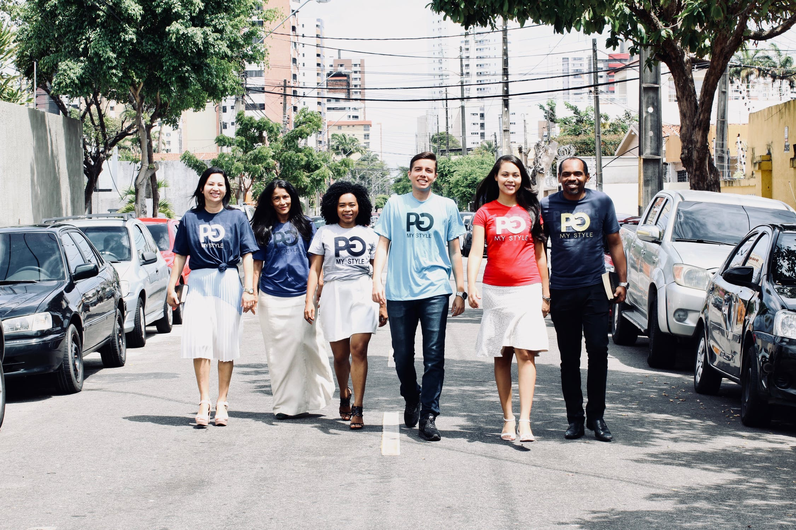

Про компанію
Компанія Swatch була заснована Ніколасом Джорджем Хайєком у 1983 році. Роком раніше підприємець викупив у низки швейцарських банків. Вважається, що торгова марка Swatch була створена як протидія азіатським виробникам годинників, що стрімко розвиваються, які завойовували годинниковий ринок своїм недорогим наручним кварцовим годинником. Метою компанії було повернення популярності простим годинникам, для чого використовували сучасні синтетичні матеріали, а також новітні технології зі збирання годинника. Крім того, був перероблений дизайн, внаслідок чого у 1983 році перший годинник, що об'єднав у собі високу швейцарську якість і цілком прийнятну ціну, надійшли у продаж.
Наша команда
1983 року SSIH та ASUAG злилися в Société de Microélectronique et d’Horlogerie (SMH). SMH, крім двох головних вартових асоціацій Швейцарії, об'єднав незалежних виробників: Breguet, Harry Winston, Blancpain, Glashütte Original, Jaquet Droz, Léon Hatot, Omega (т. зв. «престиж і люкс» діапазон»), Rado, Longines, UNION Glashütte (т. н. «високий діапазон»), Tissot, Certina, Balmain, Calvin Klein Watches & Jewelry, Hamilton, Mido («середній діапазон»), Flik Flak та Swatch («Початковий діапазон»). До групи SMH (перейменовану 1998 року в Swatch Group) увійшли